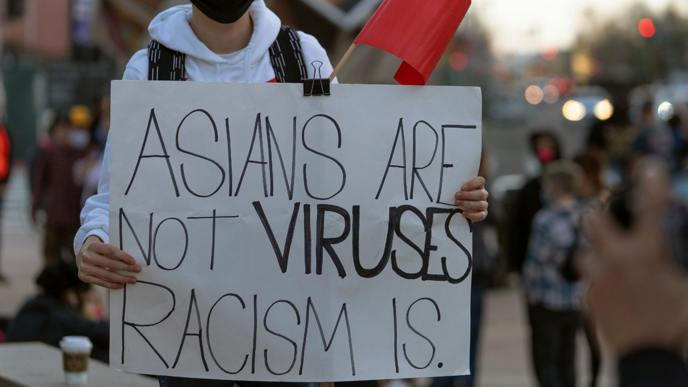
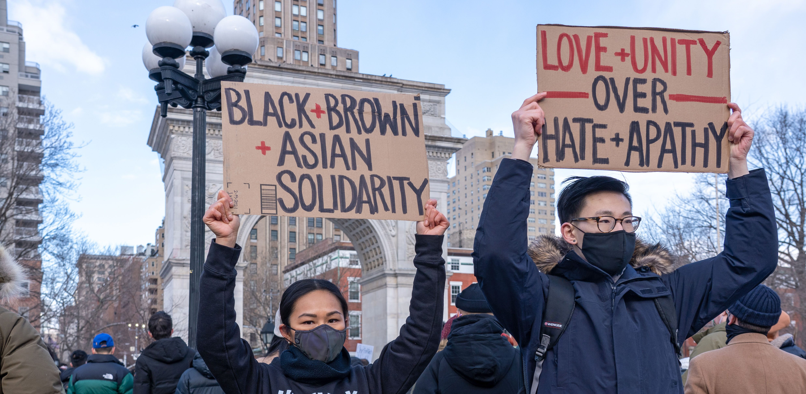

Standing in Solidarity Against White Supremacy
Despite the amount of time and change that has passed since the beginning of Chinese / Asian American immigration and its subsequent backlash, the racism and hate aimed towards Asians is still present even today. Much like how early Chinese immigrants were alienated and made to feel like they didn’t belong to the white, homogenous society, the recent events of COVID-19 have only accentuated anti-Asian sentiment. From events like Jeremy Lin being called “coronavirus” while playing basketball, to Trump referring to it as the “Chinese virus”, they contribute towards the feelings of being a perpetual foreigner and racial other within America. Furthermore, these stereotypes group all Asian Americans under the single umbrella term of being Chinese, and ignore the uniqueness and differences between different Asian groups / identities. Yet, many times, Asian fail to identify and report the racism that they experience, due to a variety of factors such as uncertainty over whether it was a racially-motivated act or not.
Yet, while it is important to highlight the hate and racism targeted towards Asians, it is equally important to recognize that Asians are likewise guilty of the same thing towards black people. As mentioned as part of the model minority myth, Asian Americans are highlighted for their family and cultural values of hardwork and obedience that are attributed towards their achieving success despite being a minority. As a result, white people have used the success of Asians as a scapegoat for racism, allowing them to play down the effect of racism on the struggles of black people and other minorities in America, instead allowing them to blame black people’s struggles on their supposed “laziness and dysfunctionality”. Our attempts to fit in white society and become “honorary whites” have often come at the expense of black people, sitting idly by while allowing white people to suppress minority groups. To make matters worse, there remains anti-blackness within the Asian community and overall a general lack of understanding between the two communities. There is a lot of hate in America right now, and the main root of the cause lies in the model minority myth and white supremacy. Asians have long stood by complacently, believing that it isn’t our problem, but recent events have further proved that we must work together with the black community and other minorities in demanding social justice and equality for all races.